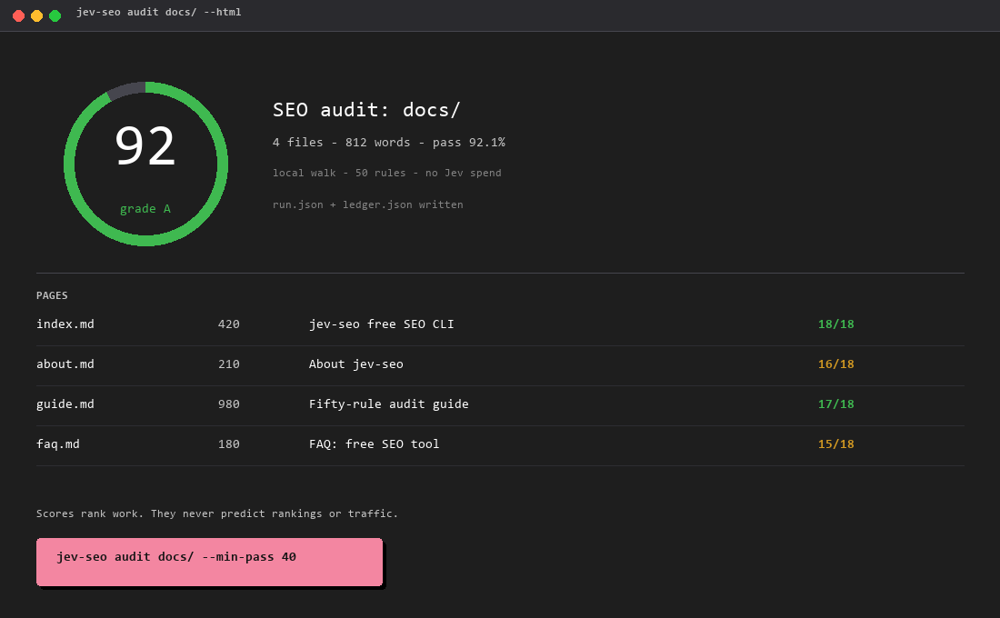
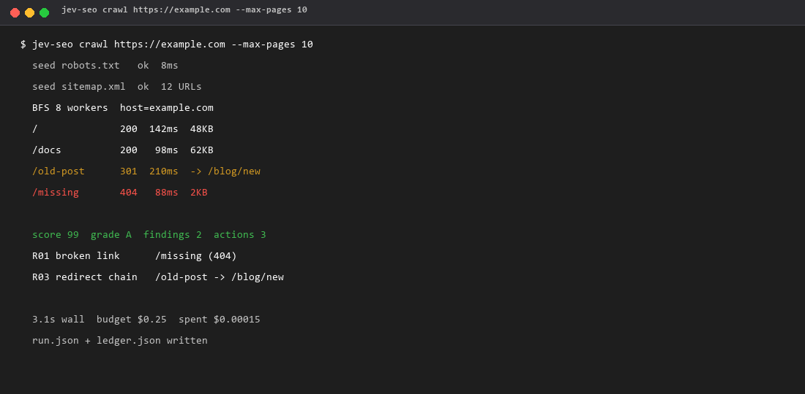
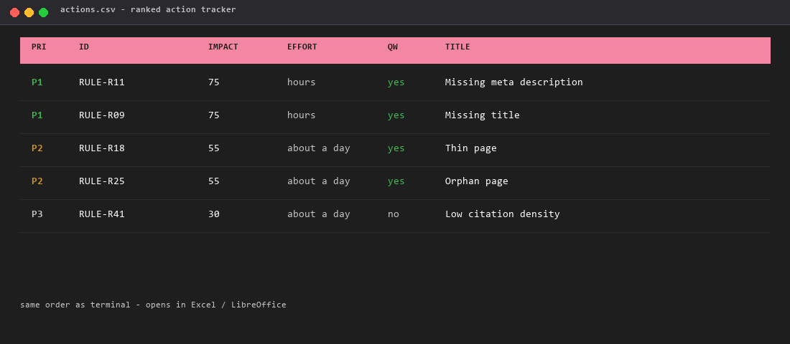
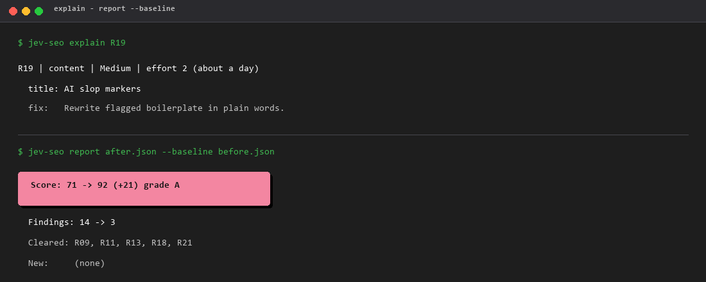
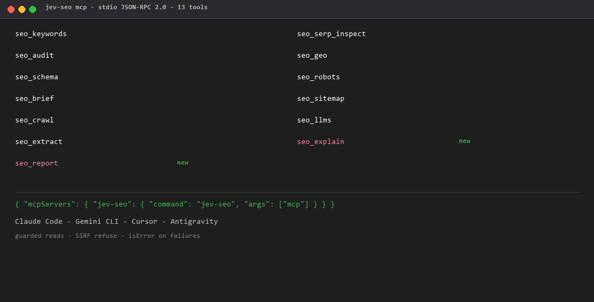
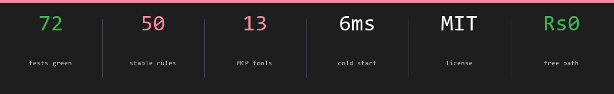
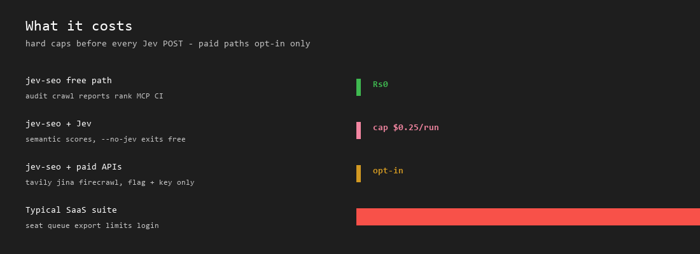

jev-seo
Zero-cost SEO & GEO search radar. Proofs your search presence the way a printer proofs a sheet — no dashboard, no $130/month, no hallucinated advice.
jev-seo is a free, MIT-licensed, open source alternative to Semrush and Ahrefs ($130+/month) that audits local files, validates schema, checks robots.txt, and scores AI citation likelihood. One Rust binary under 30MB RAM, hundreds of files audited in under a second, ten commands, zero subscriptions, zero paid data APIs.
$ cargo install jev-seo
read the proof ↓
- GPTBot allowed
- ClaudeBot allowed
- Google-Extended needs check
- PerplexityBot allowed
Calibrate once, read every month
The GEO meter is the real reading for query "jev seo" taken from the jev-for-seo guide. The bench strip is the ten commands, five proven on this very site.
Real run: jev-seo geo jev-for-seo.html --query "jev seo", 2026-09-22. The figure is a commitment, not a claim.
jev-seo audit .ran here: 74.3% pass, 0 orphansjev-seo geo <page> --query "jev seo"ran here: 8/10 compositejev-seo schema index.htmlran here: VALID 100/100jev-seo robots jevseo.vercel.appran here: all AI crawlers allowedjev-seo sitemap sitemap.xmlran here: 9 URLs, lastmod setjev-seo keywords "jev seo"autocomplete discovery + intentjev-seo brief "jev for seo" --markdownSERP synthesis + outlinejev-seo query "jev seo"competitor radar + rerankjev-seo rank --domain jevseo.vercel.app --query "jev seo"baseline in local SQLitejev-seo mcpstdio server into your agentjev-seo explain R19rule card: area, severity, effort, fixjev-seo report --baselinescore delta between two auditsjev-seo gsc query --siteSearch Console clicks, freeThe stack that costs $130/month doesn't do this
01
Zero subscriptions
Scrapes DuckDuckGo HTML and suggest endpoints directly. No credit card, no paid API key, no DataForSEO top-up. The bill is ₹0 forever.
02
No hallucinated advice
TypeSafe Jev System One scores with typed Choice / Score / Noul primitives. Deterministic judgments, not chatbot essays. What it flags is real.
03
Fast and local
A native Rust binary under 30MB RAM. Audits hundreds of markdown and HTML files in under a second. Rank history lives in one local SQLite file.
04
Agent native
A stdio JSON-RPC 2.0 MCP server feeds the same 13 tools into Claude Code, Gemini CLI, and Antigravity. SEO as a capability, not a dashboard.
Thirteen commands, no dashboard
Every tool proofs something measurable. Terminal in, verdict out.
jev-seo query "offline expense tracker android"live SERP competitor radar + Jev relevance rerank + gap analysisjev-seo audit docs/ --min-pass 40105 files · title collisions, thin pages, AI slop, orphan links · fails CI below the floorjev-seo geo README.md --query "agentic skills"GEO citation probability 1-10 + 5-dimension composite vs Perplexity, SearchGPT, Gemini Overviewsjev-seo schema index.htmlJSON-LD validator: SoftwareApplication, Article, Organization, Product + deprecation flagsjev-seo robots example.comGPTBot · ClaudeBot · PerplexityBot · Google-Extended · Bytespiderjev-seo brief "fast local sqlite tui" --markdowncompetitor SERP synthesis → H2 outline + 150-word GEO direct answerjev-seo sitemap sitemap.xml50,000 URL limit, HTTPS canonical, hreflang en-GB not en-UK, x-defaultjev-seo keywords "scraper"autocomplete discovery + Jev intent classificationjev-seo rank --domain crates.io --query "rust grep"rank drift tracked in local SQLite over timejev-seo mcpstdio MCP server → the 13 tools, straight into your coding agentjev-seo crawl example.com --max-pages 50parallel live crawl: health score, broken links, redirect chains, orphans, timingjev-seo llms example.comllms.txt plus AI crawler scoring for answer-engine readinessjev-seo doctorversion, API key presence, database, platform in one checkSeen on a real run
Health score with grades, impact-ranked actions, completeness notes. Scorecard, crawl session, action tracker, MCP surface.







Reasons Jev: the oracle is a decision engine, not a chatbox
Conversational LLMs write you a confident paragraph you then have to verify. Jev answers machine-native questions with machine-native types.
Jev hates being asked for arithmetic or word counts. The CLI does the math; Jev does the judgment. That split is the whole architecture.
JEV SEALDECISION ENGINE, NOT CHATBOXProof the sheet before it ships
The audit reads your content the way a proofreader reads a galley. These are real patterns it catches:
em-dash density
"The—admittedly—fragile—stack—" ✗ 3 per 500 words
over 2 per 500 words = editorial tic. Flagged.
AI vocabulary
"delve · leverage · testament · foster · seamless" ✗ 4 hits
17 known boilerplate crutches. Stripped automatically.
heading hierarchy
H1 → H3, no H2 ✗ skip-level
illegal jump in the outline. Caught.
orphan pages
/blog/seo-for-vercel has 0 inbound links ✗ orphan
the link graph finds it. You fix the path.
cannibalization
3 pages target "rust grep" ✗ collision
keyword stems colliding. One winner per stem.
schema deprecation
"HowTo" schema present ✗ deprecated
no rich result. Migrate to the current type.
Direct answers, no hedge
The same plain declarative copy AI search engines quote. Short question, shorter answer.
Is jev-seo free?
Yes. jev-seo is MIT-licensed open source and costs zero subscriptions. It scrapes free DuckDuckGo endpoints and audits local files, so there is no paid API key required.
What does GEO mean in jev-seo?
GEO stands for Generative Engine Optimization: making content likely to be cited by AI search engines such as Gemini Overviews, Perplexity, and SearchGPT. jev-seo scores citation likelihood from 1 to 10 with TypeSafe Jev.
Does jev-seo need a credit card or paid API?
No. The only optional key is a free TypeSafe API key for semantic scoring. Ranking history, audits, schema validation, and SERP inspection all run locally with zero cost.
jev-seo vs Semrush or Ahrefs?
Semrush and Ahrefs are hosted dashboards that cost over $130 a month. jev-seo is a native Rust CLI and MCP server that audits local files, validates schema, checks robots.txt, and scores GEO citations — one binary, under 30MB RAM.
How do I install jev-seo?
cargo install jev-seo, or download the release binary for Windows, macOS, or Linux from GitHub Releases.
Does jev-seo collect my data?
No analytics, no telemetry. Audits read local files, rank history stays in one local SQLite database, and only semantic scoring calls reach the TypeSafe API with content you explicitly pass.

Akash Priyadarshi
Set up in two lines
# 1 — install (crates.io)
$ cargo install jev-seo
# 2 — free oracle key for semantic scoring
$ export TYPESAFE_API_KEY=your_key_here
No credit card. No hosted dashboard. No telemetry. One binary, one local SQLite file, 30MB of RAM. v0.1.1 adds live-site crawl, llms.txt readiness, ranked fix actions, and HTML/PDF/Markdown reports. v0.1.2 (22 Oct 2026) adds explain, baseline diffs, action trackers, and MCP report tools.